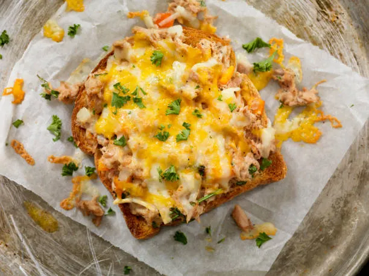

Tuna Melt Recipe

Description
A hot sandwich typically made with canned tuna, mayonnaise, and other
ingredients (like celery or onion) for a tuna salad, which is then layered
on bread with a slice or two of cheese and grilled or baked until the
cheese is melted and the bread is toasted.
Ingredients
- 1 (5 oz) can canned tuna (drained well)
- 2 Tbsp mayonnaise (or more to taste)
- Salt and pepper to taste
- 2 slices bread (e.g., white, whole wheat, sourdough)
-
1-2 slices or 1/4 cup shredded cheese (e.g., Cheddar, American, Swiss)
- 1 Tbsp butter or oil (for grilling)
Steps
-
Make Tuna Salad: In a small bowl, combine the drained
tuna, mayonnaise, salt, and pepper. Mix well. (Optional: add chopped
celery, onion, or relish for extra flavor/crunch).
-
Assemble Sandwich: Butter one side of each slice of
bread. On the unbuttered side of one slice, place the tuna salad. Top
the tuna with the cheese. Place the second slice of bread on top,
butter-side-up (or butter both exterior sides).
-
Grill/Cook: Heat a nonstick skillet or griddle over
medium heat. Place the sandwich in the pan.
-
Melt: Cook for 3-5 minutes per side, pressing gently
with a spatula, until both sides of the bread are golden brown and the
cheese is fully melted. Reduce heat if the bread is browning too
quickly.
-
Serve: Remove from pan, slice diagonally, and serve
immediately.
Home